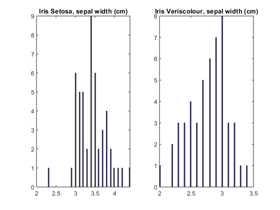
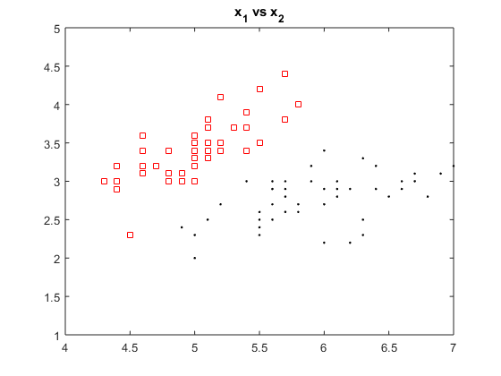

Contents
%%%%%%%%%%%%%%%%%%%%%%%%%%%%%%%%%%%%%%%%% % LAB 1, Bayesian Decision Theory %%%%%%%%%%%%%%%%%%%%%%%%%%%%%%%%%%%%%%%%% % Attribute Information for IRIS data: % 1. sepal length in cm % 2. sepal width in cm % 3. petal length in cm % 4. petal width in cm % class label/numeric label: % -- Iris Setosa / 1 % -- Iris Versicolour / 2 % -- Iris Virginica / 3
this script will run lab1 experiments..
clear
load irisdata.mat
extract unique labels (class names)
labels = unique(irisdata_labels);
generate numeric labels
numericLabels = zeros(size(irisdata_features,1),1); for i = 1:size(labels,1) numericLabels(find(strcmp(labels{i},irisdata_labels)),:)= i; end
feature distribution of x1 for two classes
figure subplot(1,2,1), hist(irisdata_features(find(numericLabels(:)==1),2),100), title('Iris Setosa, sepal width (cm)'); subplot(1,2,2), hist(irisdata_features(find(numericLabels(:)==2),2),100); title('Iris Veriscolour, sepal width (cm)'); figure subplot(1,2,1), hist(irisdata_features(find(numericLabels(:)==1),1),100), title('Iris Setosa, sepal length (cm)'); subplot(1,2,2), hist(irisdata_features(find(numericLabels(:)==2),1),100); title('Iris Veriscolour, sepal length (cm)'); figure plot(irisdata_features(find(numericLabels(:)==1),1),irisdata_features(find(numericLabels(:)==1),2),'rs'); title('x_1 vs x_2'); hold on; plot(irisdata_features(find(numericLabels(:)==2),1),irisdata_features(find(numericLabels(:)==2),2),'k.'); axis([4 7 1 5]); 
build training data set for two class comparison
merge feature samples with numeric labels for two class comparison (Iris Setosa vs. Iris Veriscolour
trainingSet = [irisdata_features(1:100,:) numericLabels(1:100,1) ];
Lab1 experiments (include here)
x = irisdata_features(1:100,1); [posteriors_x,g_x]=lab1(x,trainingSet);
Prior probabilities: Mean & Std for class 1 & 2 Posterior prob. for the test feature Discriminant function for the test feature
Plots
figure
subplot(1,2,1)
scatter(x, g_x);
subplot(1,2,2)
scatter(x,posteriors_x);
min_value = min(abs(posteriors_x));
display('The optimal threshold is: '+ min_value);
Columns 1 through 7 84.0462 104.0462 101.0462 32.0462 111.0462 112.0462 116.0462 Columns 8 through 14 105.0462 109.0462 97.0462 108.0462 32.0462 116.0462 104.0462 Columns 15 through 21 114.0462 101.0462 115.0462 104.0462 111.0462 108.0462 100.0462 Columns 22 through 26 32.0462 105.0462 115.0462 58.0462 32.0462